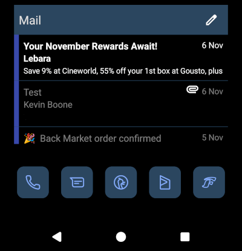

How to get a dark background on the K-9/Thunderbird e-mail widget for Android

K-9 Mail, now known as Thunderbird for Android, is a very serviceable
e-mail client for Android cellphones. It’s particularly useful for
de-Googlers, because it’s open-source, and has no dependencies on any
Google service. You can install it using F-Droid, or just get the
.apk from the project’s
GitHub repository, which also holds the source code.
Unfortunately, the home-screen widget still does not respect the system theme settings, despite the problem being raised six years ago. The widget still displays as a bright white box with black text, even when all the other display elements are dark. This isn’t just a cosmetic matter: I use a dark theme on my handsets with OLED displays to reduce the risk of burn-in, and to save energy. OLED displays are not back-lit – only the bright pixels use energy. So it can save a bit of battery life to use a dark theme, as well as potentially extending the life of the display.
Still, everybody is very busy, and it’s hard to complain about software we aren’t paying for. I don’t know the K-9 source code well enough to implement proper theme handling, but I know Android well enough to implement a nasty hack, which works well enough for my purposes.
Unfortunately, the implement the hack, you need to be willing to build K-9 Mail from source.
Building K-9 mail
The build system for K-9 is based on Gradle which, for better or worse, has become ubiquitous in the Android world. Gradle is self-downloading, so the only prerequisites for building the app are Java development tools (JDK), and the Android software development kit (SDK).
It seems that the K-9 build needs Java 21 or later, so you might find you have to update your Java JDK installation.
You can get the Android SDK here. For the present
purposes, you don’t need the full Android Studio package: just the
command-line tools will suffice. The Android website explains how to set
these tools up – I’m not going to go into more detail here, because the
set-up depends on your operating system. With the SDK set up, all we
need to do is to set the environment variable ANDROID_HOME
to its install location, and then build K-9 by running the
gradlew script or batch file included in the source.
On my Linux system I do:
$ ANDROID_HOME=/home/kevin/lib/android/sdk ./gradlew assembleThe first build will take a long time – hours, most likely. Subsequent builds should take only a few minutes.
The build process creates two sets of APK files: one with ‘K-9’ branding, and one with ‘Thunderbird’ branding. I’m sure that there are functional differences as well as branding differences, but the only one I’ve found is that the Thunderbird-branded version will import settings directly from the Thunderbird desktop application, by scanning a barcode.
You can install the APK by copying it to the handset and then using a
file manager, or using the adb install command to push it
over a USB cable. You’ll have adb if you installed the
Android SDK, but you’ll need to enable developer mode and USB debugging
on your handset to use this method.
Modifying the source
The widget’s foreground colours are defined in the file
feature/widget/message-list/src/main/res/values/colors.xml.
To get grey for read messages, and white for unread, make these
changes:
<color name="message_list_widget_text_read">#7F7F7F</color>
<color name="message_list_widget_text_unread">#FFFFFF</color>Of course, you can use whatever colours you like. There are other colours that apply to the widget in the same file.
To set the background colour, you’ll need to edit
feature/widget/message-list/src/main/res/layout/message_list_widget_layout.xml
For example:
<ListView
android:id="@+id/listView"
...
android:background="@android:color/black"Again, if black is too dark, you can use a different colour.
The Android SDK predefines some colour constants, but you can also
specify them in HTML hex notation, #RRGGBB. There’s no easy
way, so far as I know, to tell which colours will look good, except by
trial-and-error, and each trial will take a little while, because you’ll
need to rebuild the source and reinstall the APK each time.
The result
I’ve tweaked the colours to match the other icons on my home screen, so the final result is this:

Closing remarks
This is an ugly hack, because the colour changes are not theme-dependent. Of course, they weren’t theme-dependent originally, which is why I needed the hack. Getting a theme change by modifying and rebuilding the source code is, frankly, a bit of a mission, and I doubt I would have attempted it if I didn’t already have the Android SDK and JDK set up. Still, it seems a shame for such a solid app to be let down by so trivial a thing as not being able to change the widget colours.